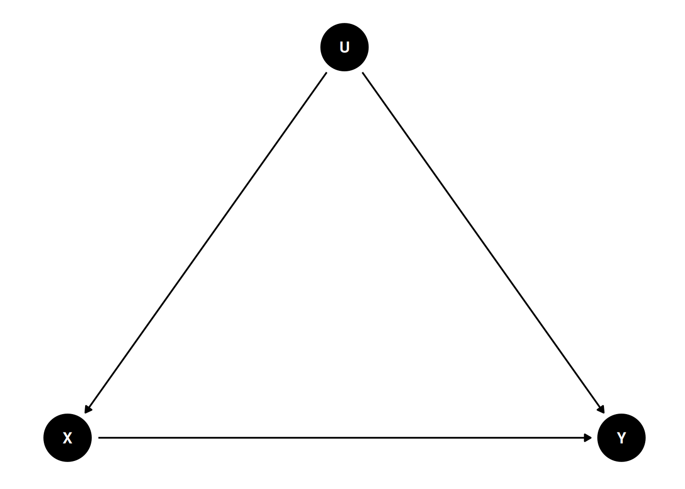
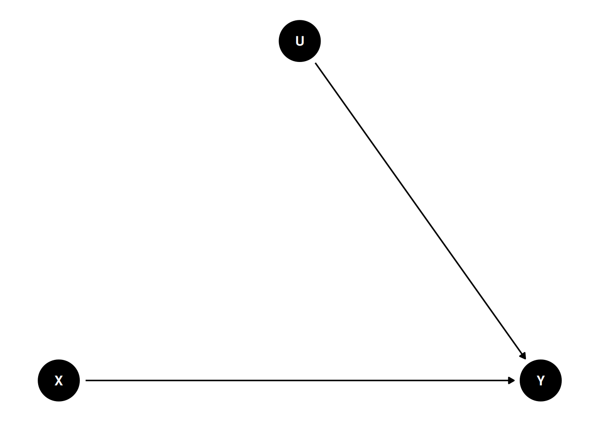
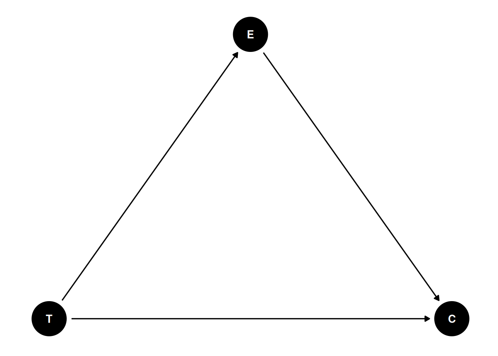
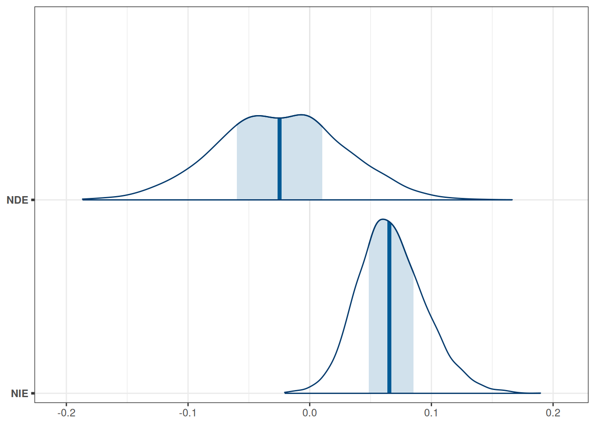
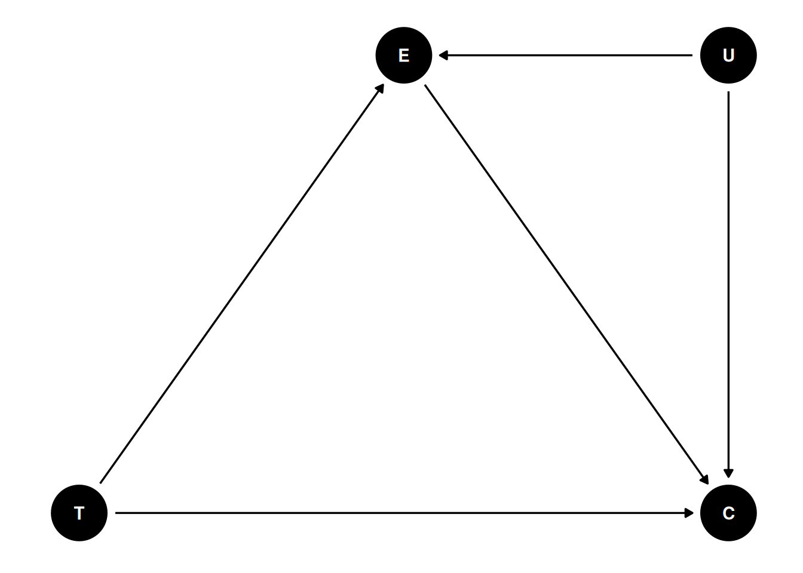

We’ll use the framing data set from the mediation package, so you’ll need to have the package installed first. The data were analyzed in a report in the American Journal of Political Science. The study examined whether “news about the costs of immigration boosts white opposition” (p. 959).
14.1 Summary Statistics Tables
I’ll take a quick detour to introduce you to some useful functions for tabulating your data. The functions will be from the modelsummary package.
data(framing, package ="mediation")# Subtract the `emo` variable by 3 so that it starts from 0-9framing$emo<-framing$emo-3# Quick summary of selected variablesdatasummary_skim(framing)
Unique (#)
Missing (%)
Mean
SD
Min
Median
Max
age
63
0
47.8
16.0
18.0
47.0
85.0
income
19
0
10.8
3.9
1.0
11.0
19.0
emo
10
0
4.0
2.8
0.0
4.0
9.0
p_harm
7
0
5.9
1.8
2.0
6.0
8.0
tone
2
0
0.5
0.5
0.0
1.0
1.0
eth
2
0
0.5
0.5
0.0
1.0
1.0
treat
2
0
0.3
0.4
0.0
0.0
1.0
immigr
4
0
3.0
1.0
1.0
3.0
4.0
anti_info
2
0
0.1
0.3
0.0
0.0
1.0
cong_mesg
2
0
0.3
0.5
0.0
0.0
1.0
# Summary by treatment condition (`tone`)datasummary_balance(~tone, data =framing)
0
1
Mean
Std. Dev.
Mean
Std. Dev.
Diff. in Means
Std. Error
age
48.4
16.0
47.1
16.0
-1.3
2.0
income
11.0
3.9
10.6
3.9
-0.4
0.5
emo
3.4
2.6
4.5
2.8
1.1
0.3
p_harm
5.5
1.8
6.2
1.7
0.7
0.2
eth
0.5
0.5
0.5
0.5
0.0
0.1
treat
0.0
0.0
0.5
0.5
0.5
0.0
immigr
2.8
1.0
3.2
0.9
0.4
0.1
anti_info
0.1
0.3
0.1
0.3
0.0
0.0
cong_mesg
0.3
0.5
0.4
0.5
0.0
0.1
N
Pct.
N
Pct.
cond
not asked
0
0.0
0
0.0
refused
0
0.0
0
0.0
control
0
0.0
0
0.0
1
0
0.0
68
50.4
2
0
0.0
67
49.6
3
67
51.5
0
0.0
4
63
48.5
0
0.0
anx
not asked
0
0.0
0
0.0
refused
0
0.0
0
0.0
very anxious
34
26.2
26
19.3
somewhat anxious
48
36.9
38
28.1
a little anxious
31
23.8
43
31.9
not anxious at all
17
13.1
28
20.7
educ
not asked
0
0.0
0
0.0
refused
0
0.0
0
0.0
less than high school
6
4.6
14
10.4
high school
48
36.9
44
32.6
some college
31
23.8
39
28.9
bachelor's degree or higher
45
34.6
38
28.1
gender
not asked
0
0.0
0
0.0
refused
0
0.0
0
0.0
male
64
49.2
62
45.9
female
66
50.8
73
54.1
english
Strongly Favor
1
0.8
6
4.4
Favor
15
11.5
10
7.4
Oppose
44
33.8
38
28.1
Strongly Oppose
70
53.8
81
60.0
# More tailor-made table with selected variables by treatment conditiondatasummary(emo+p_harm+cong_mesg~Factor(tone)*(Mean+SD+Histogram), data =framing)
14.2 Randomization Removes Incoming Paths for Treatment
Let’s consider a DAG without randomization, for the following two variables:
X: Exposure to a negatively framed news story about immigrants
Y: Anti-immigration political action
There are many possible confounders when we observe these two variables in data (e.g., an individual’s political affiliation and the state in which a person resides). We can represent these unobserved confounders as U, so the DAG will be something like
dag2<-dagitty("dag{ X -> Y; U -> X; U -> Y U [unobserved] }")coordinates(dag2)<-list(x =c(X =0, U =1, Y =2), y =c(X =0, U =1, Y =0))# Plotggdag(dag2)+theme_dag()

Figure 14.1: DAG with an unobserved confounder
The magic of randomization—randomly assigning individuals to a manipulated level of X—is that it blocks the path U → X. Therefore, with randomization, the reason a person sees a negatively-framed news story about immigrants is not related to reasons that the person may have intentions for anti-immigration actions. The DAG becomes
dag3<-dagitty("dag{ X -> Y; U -> Y U [unobserved] }")coordinates(dag3)<-list(x =c(X =0, U =1, Y =2), y =c(X =0, U =1, Y =0))# Plotggdag(dag3)+theme_dag()

Figure 14.2: DAG with randomization
Therefore, when randomization is successful, the path coefficient of X → Y is the causal effect of X on Y. However, randomized experiments do not always rule out all confounding. For example, suppose participants are randomly assigned to different experimental conditions, but those who disagree with the presented news story drop out. In that case, such attrition can induce a non-zero correlation between X and Y in the remaining sample.
14.3 Causal Chains
14.3.1 Post-Treatment Bias
Here are some key variables from the framing data set:
cong_mesg: binary variable indicating whether or not the participant agreed to send a letter about immigration policy to his or her member of Congress
emo: posttest anxiety about increased immigration (0-9)
tone: framing of news story (0 = positive, 1 = negative)
We can compare the results of two models:
tone → cong_mesg
tone → cong_mesg, adjusting for emo
Which model gives us the causal effect estimate for tone? Let’s run the two models.
m_no_adjust<-brm(cong_mesg~tone, data =framing, family =bernoulli(link ="logit"), file ="08b_m_no_adjust")
For execution on a local, multicore CPU with excess RAM we recommend calling
options(mc.cores = parallel::detectCores()).
To avoid recompilation of unchanged Stan programs, we recommend calling
rstan_options(auto_write = TRUE)
For within-chain threading using `reduce_sum()` or `map_rect()` Stan functions,
change `threads_per_chain` option:
rstan_options(threads_per_chain = 1)
Attaching package: 'rstan'
The following object is masked from 'package:tidyr':
extract
m_adjust<-brm(cong_mesg~tone+emo, data =framing, family =bernoulli(link ="logit"), file ="08b_m_adjust")
Warning:
`modelsummary` uses the `performance` package to extract goodness-of-fit
statistics from models of this class. You can specify the statistics you wish
to compute by supplying a `metrics` argument to `modelsummary`, which will then
push it forward to `performance`. Acceptable values are: "all", "common",
"none", or a character vector of metrics names. For example: `modelsummary(mod,
metrics = c("RMSE", "R2")` Note that some metrics are computationally
expensive. See `?performance::performance` for details.
This warning appears once per session.
No adjustment
Adjusting for feeling
b_Intercept
−0.81 [−1.19, −0.46]
−2.00 [−2.63, −1.44]
b_tone
0.21 [−0.28, 0.71]
−0.13 [−0.71, 0.43]
b_emo
0.32 [0.21, 0.43]
Num.Obs.
265
265
R2
0.003
0.142
ELPD
−170.1
−152.6
ELPD s.e.
5.5
7.4
LOOIC
340.2
305.2
LOOIC s.e.
11.0
14.8
WAIC
340.2
305.2
RMSE
0.47
0.44
We can see that the Bayes estimate of the coefficient for tone was positive without emo, but was negative with emo. Which one should we believe? The information criteria (LOOIC and WAIC) suggested that the model with emo was better for prediction, but just because something helps predict the outcome does not make it a causal variable. To repeat,
Coefficients in a predictive model are not causal effects.
And to emphasize again,
Causal inference requires causal assumptions, and these assumptions are not in the data.
So instead, we need a DAG. Given that we know emo is measured after the intervention, it seems reasonable to think that a negatively framed story about immigrants would elicit some negative emotions about increased immigration, and that emotion may prompt people to take anti-immigrant actions. Therefore, we have the following DAG:
Code
dag5<-dagitty("dag{ T -> C; T -> E; E -> C }")coordinates(dag5)<-list(x =c(T =0, E =1, C =2), y =c(T =0, E =1, C =0))# Plotggdag(dag5)+theme_dag()
Table 14.1: DAG for a mediation model with emotion as a mediator.

This is an example of a pipe/chain. It is a causal chain going from T(one) → E(motion) → C(ongress message). If we are interested in the causal effect of T, we should not condition on E; conditioning on E would mean comparing those who saw the negatively-framed story and those who saw the positively-framed story but had the same negative emotion towards immigrants. In other words, adjusting for E would mean taking out part of the effect of T on C through E.
As another example, think about a drug that is supposed to lower the risk of a heart attack. Imagine someone conducting a study comparing drug/no drug conditions on their probability of getting heart attacks. Should we adjust for participants’ blood pressure after the intervention? If we want to know the drug’s effect, and that the drug works by lowering blood pressure, we should not adjust for posttest blood pressure. Otherwise, we would be asking the question: Does the drug help prevent heart attacks through something other than lowering one’s blood pressure?
The latter question can be answered in mediation analysis.
14.4 Causal Mediation
In the DAG above, E is a post-treatment variable potentially influenced by T, which we call a mediator. Mediator is an important topic in causal inference, as it informs the mechanism of how a variable has a causal effect on an outcome.
One thing to be careful of is that, statistically speaking, a mediator behaves very much like a confounder, and their difference is based on causal assumptions.
Let’s analyze the mediation model in Figure X. There are two variables that are on the receiving end of some causal effects: emo and cong_mesg. Whereas the generalized linear model handles one outcome, with brms, we can have a system of equations—one for each outcome—estimated simultaneously, as shown in the code below.
14.4.1 Using brms
m_med<-brm(# Two equations for two outcomesbf(cong_mesg~tone+emo)+bf(emo~tone)+set_rescor(FALSE),# A list of two family arguments for two outcomes family =list(bernoulli("logit"), gaussian("identity")), data =framing, prior =prior(normal(0, 2), class ="b", resp ="emo")+prior(student_t(4, 0, 5), class ="sigma", resp ="emo")+prior(student_t(4, 0, 2.5), class ="b", resp ="congmesg"), seed =1338, file ="08b_m_med")
# 1. Form the data list for Stanstan_dat<-with(framing,list( N0 =sum(tone==0), N1 =sum(tone==1), m0 =emo[which(tone==0)], m1 =emo[which(tone==1)], y0 =cong_mesg[which(tone==0)], y1 =cong_mesg[which(tone==1)]))# 2. Run Stanm_med_stan<-med_mod$sample( data =stan_dat, seed =1338, refresh =1000)
14.4.3 Direct and Indirect Effects
In a mediation model, the effect of X on Y has two mechanisms: - Indirect effect: X causes Y because X causes M, and M causes Y - Direct effect: X causes Y without involving M
More specifically, the direct effect is the change in Y for one unit change in X, holding M constant. In our example, it means comparing subsets of the treatment and the control groups, under the condition that both subsets have the same level of negative emotion about increased immigration. The indirect effect takes more effort to understand: it is the change in Y for the control group (or the treatment group) if their mediator value is set to the same level as the treatment group. In our example, it would mean comparing the control group and the counterfactual where the control group had their negative emotion changed to the same level as the treatment group.
The causal mediation literature has more distinctions on the different types of direct and indirect effects. Below, I give codes for obtaining these effects without going into detail.1
14.4.4 Controlled direct effect (CDE)
CDE is the direct effect when the mediator is set to a specific level. Below is the CDE for emo = 0 and emo = 9, respectively.
Table 14.2: Estimated direct effect of tone on cong_mesg at two different levels of emo.
tone
emo
Estimate
Est.Error
Q2.5
Q97.5
0
0
0.1212844
0.0320367
0.0662354
0.1907005
1
0
0.1084567
0.0330696
0.0538386
0.1830547
0
9
0.6982051
0.0698306
0.5559154
0.8234034
1
9
0.6702609
0.0631406
0.5418592
0.7855347
14.4.5 Natural direct effect (NDE)
The “natural” effects are quantities for some kind of population averages. NDE is the direct effect when the mediator is held constant at the level of the control group. As a first step, we need to obtain the potential outcome of emo when tone = 0. We call this potential outcome variable \(M_0\) (potential outcome of \(M\) if \(X\) = 0). This has already been observed for the control group but will be a counterfactual for the treatment group.
We will use a general approach by Imai et al. (2010) to simulate potential outcomes for each observation, before computing NDE (and NIE). For each observation, we will first simulate the potential outcome of emo when tone = 0 (\(M_0\)), and then simulate the potential outcome of emo when tone = 1 (\(M_1\)).
# Simulate potential outcomes for mediator when T = 0dat0<-m_med$datadat0$tone<-0# Predicted emo when T = 0po_m0<-posterior_predict(m_med, newdata =dat0, resp ="emo")# Simulate potential outcomes for mediator when T = 1dat1<-m_med$datadat1$tone<-1# Predicted emo when T = 1po_m1<-posterior_predict(m_med, newdata =dat1, resp ="emo")
Next, we will simulate four potential outcomes for cong_mesg (Y):
Y(T = 0, M = \(M_0\))
Y(T = 1, M = \(M_0\))
Y(T = 0, M = \(M_1\))
Y(T = 1, M = \(M_1\))
m_med_draws<-as_draws_df(m_med)# Predicted logit of congmesg when T = 0 and emo = po_m0po_y0_m0<-m_med_draws$b_congmesg_Intercept+m_med_draws$b_congmesg_emo*po_m0# Predicted logit of congmesg when T = 1 and emo = po_m0po_y1_m0<-m_med_draws$b_congmesg_Intercept+m_med_draws$b_congmesg_tone+m_med_draws$b_congmesg_emo*po_m0# Predicted logit of congmesg when T = 0 and emo = po_m1po_y0_m1<-m_med_draws$b_congmesg_Intercept+m_med_draws$b_congmesg_emo*po_m1# Predicted logit of congmesg when T = 1 and emo = po_m1po_y1_m1<-m_med_draws$b_congmesg_Intercept+m_med_draws$b_congmesg_tone+m_med_draws$b_congmesg_emo*po_m1
The NDE is defined as Y(T = 1, M = \(M_0\)) - Y(T = 0, M = \(M_0\)).
NIE is the difference in the outcome between the actual control group and a counterfactual control group. The counterfactual here is a control group that did not receive the treatment, but had their emo value set to be equal to the treatment group. The NIE is defined as Y(T = 0, M = \(M_1\)) - Y(T = 0, M = \(M_0\)).
draws_nde_nie<-as_draws(list(NDE =nde, NIE =nie))posterior::summarise_draws(draws_nde_nie)
Table 14.3: Estimated natural direct and indirect effects for the control group.
mcmc_areas(draws_nde_nie, bw ="SJ")

Figure 14.3: Estimated natural direct and indirect effects for the control group.
14.4.6 Sensitivity analysis
Code
dag6<-dagitty("dag{ T -> C; T -> E; E -> C; U -> E; U -> C }")coordinates(dag6)<-list(x =c(T =0, E =1, C =2, U =2), y =c(T =0, E =1, C =0, U =1))ggdag(dag6)+theme_dag()

Figure 14.4: DAG for a mediation model with an unobserved mediator-outcome confounder.
Assumptions of Causal Mediation
Mediation effects can be estimated properly when the causal diagram and the corresponding model are specified correctly. In our model, we assume
No unmeasured treatment-outcome confounding
No unmeasured mediator-outcome confounding
No unmeasured treatment-mediator confounding
The mediator-outcome path is not moderated by the treatment
Note that randomization of the treatment does not rule out confounding for the mediator-outcome path.
One important assumption in mediation is that there is no unobserved confounding variable between the mediator and the outcome. This assumption requires researchers’ input, as usually we don’t have studies that randomly assign both the treatment variable and the mediator. An additional technique is to ask: what would the effect be if there were unobserved confounding variables of a certain magnitude? With Bayesian, we can represent the strength of the confounding effect by a prior distribution (see McCandless & Somers, 2019, p. 10.1177/0962280217729844). The following shows the mediation estimates assuming the effect of the confounding variable to the mediator is 1, and to the outcome has a prior of N(0.5, 0.2).
data {int<lower=0> N0; // number of observations (control)int<lower=0> N1; // number of observations (treatment)array[N0] int y0; // outcome (control);array[N1] int y1; // outcome (treatment);vector[N0] m0; // mediator (control);vector[N1] m1; // mediator (treatment);}parameters {real alpham; // regression intercept for Mreal alphay; // regression intercept for Mreal beta1; // X -> Mreal beta2; // X -> Yreal beta3; // M -> Yvector[N0] u0; // confounding variablevector[N1] u1; // confounding variablereal beta4; // U -> Yreal<lower=0> sigmam; // SD of prediction error for M}model {// model u0 ~ std_normal(); u1 ~ std_normal(); m0 ~ normal(alpham + u0, sigmam); m1 ~ normal(alpham + beta1 + u1, sigmam); y0 ~ bernoulli_logit(alphay + beta3 * m0 + beta4 * u0); y1 ~ bernoulli_logit(alphay + beta2 + beta3 * m1 + beta4 * u1);// prior alpham ~ normal(4.5, 4.5); alphay ~ normal(0, 5); beta1 ~ std_normal(); beta2 ~ std_normal(); beta3 ~ std_normal(); beta4 ~ normal(0.5, 0.2); sigmam ~ student_t(4, 0, 5);}
# 1. form the data list for Stanstan_dat<-with(framing,list( N0 =sum(tone==0), N1 =sum(tone==1), m0 =emo[which(tone==0)], m1 =emo[which(tone==1)], y0 =cong_mesg[which(tone==0)], y1 =cong_mesg[which(tone==1)]))# 2. Run Stanm_med_sens<-med_mod_sens$sample( data =stan_dat, seed =1338, refresh =1000)
Figure 14.5: Estimated coefficients for the mediation model with the sensitivity analysis.
As you can see, the prior of the confounding effect attenuates the coefficients from the mediator to the outcome, but the path from the mediator to the outcome remains pretty much above zero.
You may also check out the BayesGmed package, which is also based on Stan. More descriptions are in the paper Yimer et al. (2023).
Imai, K., Keele, L., & Tingley, D. (2010). A general approach to causal mediation analysis. Psychological Methods, 15(4), 309–334. https://doi.org/10.1037/a0020761
McCandless, L. C., & Somers, J. M. (2019). Bayesian sensitivity analysis for unmeasured confounding in causal mediation analysis. Statistical Methods in Medical Research, 28(2), 515–531. https://doi.org/10.1177/0962280217729844
Yimer, B. B., Lunt, M., Beasley, M., Macfarlane, G. J., & McBeth, J. (2023). BayesGmed: An R-package for Bayesian causal mediation analysis. PLOS ONE, 18(6), e0287037. https://doi.org/10.1371/journal.pone.0287037
# Mediation```{r}#| include: falsecomma <-function(x, digits =2L) format(x, digits = digits, big.mark =",")library(tidyverse)theme_set(theme_bw() +theme(panel.grid.major.y =element_line(color ="grey92")))library(dagitty)library(ggdag)library(brms)options(brms.backend ="cmdstanr")library(cmdstanr)library(bayesplot)library(modelsummary)```We'll use the `framing` data set from the `mediation` package, so you'll need to have the package installed first. The data were analyzed in a [report in the American Journal of Political Science](https://doi.org/10.1111/j.1540-5907.2008.00353.x). The study examined whether "news about the costs of immigration boosts white opposition" (p. 959).## Summary Statistics TablesI'll take a quick detour to introduce you to some useful functions for tabulating your data. The functions will be from the `modelsummary` package.```{r}data(framing, package ="mediation")# Subtract the `emo` variable by 3 so that it starts from 0-9framing$emo <- framing$emo -3# Quick summary of selected variablesdatasummary_skim(framing)# Summary by treatment condition (`tone`)datasummary_balance(~ tone, data = framing)# More tailor-made table with selected variables by treatment conditiondatasummary(emo + p_harm + cong_mesg ~Factor(tone) * (Mean + SD + Histogram),data = framing)# Correlation tableframing |>select(tone, emo, cong_mesg) |>datasummary_correlation(method ="pearson")```## Randomization Removes Incoming Paths for TreatmentLet's consider a DAG without randomization, for the following two variables:- X: Exposure to a negatively framed news story about immigrants- Y: Anti-immigration political actionThere are many possible confounders when we observe these two variables in data (e.g., an individual's political affiliation and the state in which a person resides). We can represent these unobserved confounders as U, so the DAG will be something like```{r}#| label: fig-dag2#| fig-cap: "DAG with an unobserved confounder"dag2 <-dagitty("dag{ X -> Y; U -> X; U -> Y U [unobserved] }")coordinates(dag2) <-list(x =c(X =0, U =1, Y =2),y =c(X =0, U =1, Y =0))# Plotggdag(dag2) +theme_dag()```The magic of randomization---randomly assigning individuals to a manipulated level of X---is that it blocks the path U → X. Therefore, with randomization, the reason a person sees a negatively-framed news story about immigrants is not related to reasons that the person may have intentions for anti-immigration actions. The DAG becomes```{r}#| code-fold: false#| label: fig-dag3#| fig-cap: "DAG with randomization"dag3 <-dagitty("dag{ X -> Y; U -> Y U [unobserved] }")coordinates(dag3) <-list(x =c(X =0, U =1, Y =2),y =c(X =0, U =1, Y =0))# Plotggdag(dag3) +theme_dag()```Therefore, when randomization is successful, the path coefficient of X → Y is the causal effect of X on Y. However, randomized experiments do not always rule out all confounding. For example, suppose participants are randomly assigned to different experimental conditions, but those who disagree with the presented news story drop out. In that case, such attrition can induce a non-zero correlation between X and Y in the remaining sample.## Causal Chains### Post-Treatment BiasHere are some key variables from the `framing` data set:- `cong_mesg`: binary variable indicating whether or not the participant agreed to send a letter about immigration policy to his or her member of Congress- `emo`: posttest anxiety about increased immigration (0-9)- `tone`: framing of news story (0 = positive, 1 = negative)We can compare the results of two models:1. `tone`→`cong_mesg`2. `tone`→`cong_mesg`, adjusting for `emo`Which model gives us the causal effect estimate for `tone`? Let's run the two models.```{r}m_no_adjust <-brm(cong_mesg ~ tone,data = framing,family =bernoulli(link ="logit"),file ="08b_m_no_adjust")m_adjust <-brm(cong_mesg ~ tone + emo,data = framing,family =bernoulli(link ="logit"),file ="08b_m_adjust")```We can combine the results in a table:```{r}msummary(list(`No adjustment`= m_no_adjust,`Adjusting for feeling`= m_adjust),estimate ="{estimate} [{conf.low}, {conf.high}]",statistic =NULL, fmt =2)```We can see that the Bayes estimate of the coefficient for `tone` was positive without `emo`, but was negative with `emo`. Which one should we believe? The information criteria (LOOIC and WAIC) suggested that the model with `emo` was better for prediction, but just because something helps predict the outcome does not make it a causal variable. To repeat,> Coefficients in a predictive model are not causal effects.And to emphasize again,> Causal inference requires causal assumptions, and these assumptions are not in the data.So instead, we need a DAG. Given that we know `emo` is measured **after** the intervention, it seems reasonable to think that a negatively framed story about immigrants would elicit some negative emotions about increased immigration, and that emotion may prompt people to take anti-immigrant actions. Therefore, we have the following DAG:```{r}#| code-fold: true#| label: tbl-dag5#| tbl-cap: "DAG for a mediation model with emotion as a mediator."dag5 <-dagitty("dag{ T -> C; T -> E; E -> C }")coordinates(dag5) <-list(x =c(T =0, E =1, C =2),y =c(T =0, E =1, C =0))# Plotggdag(dag5) +theme_dag()```This is an example of a pipe/chain. It is a causal chain going from T(one) → E(motion) → C(ongress message). If we are interested in the causal effect of T, we should not condition on E; conditioning on E would mean comparing those who saw the negatively-framed story and *those who saw the positively-framed story but had the same negative emotion towards immigrants.* In other words, adjusting for E would mean taking out part of the effect of T on C through E. As another example, think about a drug that is supposed to lower the risk of a heart attack. Imagine someone conducting a study comparing drug/no drug conditions on their probability of getting heart attacks. Should we adjust for participants' blood pressure after the intervention? If we want to know the drug's effect, and that the drug works by lowering blood pressure, we should not adjust for posttest blood pressure. Otherwise, we would be asking the question: Does the drug help prevent heart attacks through something other than lowering one's blood pressure?The latter question can be answered in mediation analysis.## Causal MediationIn the DAG above, E is a post-treatment variable potentially influenced by T, which we call a **mediator**. Mediator is an important topic in causal inference, as it informs the mechanism of how a variable has a causal effect on an outcome. One thing to be careful of is that, statistically speaking, a mediator behaves very much like a confounder, and their difference is based on causal assumptions.Let's analyze the mediation model in Figure X. There are two variables that are on the receiving end of some causal effects: `emo` and `cong_mesg`. Whereas the generalized linear model handles one outcome, with `brms`, we can have a system of equations---one for each outcome---estimated simultaneously, as shown in the code below. ### Using `brms````{r}m_med <-brm(# Two equations for two outcomesbf(cong_mesg ~ tone + emo) +bf(emo ~ tone) +set_rescor(FALSE),# A list of two family arguments for two outcomesfamily =list(bernoulli("logit"), gaussian("identity")),data = framing,prior =prior(normal(0, 2), class ="b", resp ="emo") +prior(student_t(4, 0, 5), class ="sigma", resp ="emo") +prior(student_t(4, 0, 2.5), class ="b", resp ="congmesg"),seed =1338,file ="08b_m_med")```### Using StanHere's some Stan code for running the same mediation model```{stan}#| output.var: med_mod#| file: "stan_code/mediation_logit_normal.stan"#| eval: false``````{r}med_mod <-cmdstan_model("stan_code/mediation_logit_normal.stan")``````{r}#| eval: false# 1. Form the data list for Stanstan_dat <-with( framing,list(N0 =sum(tone ==0),N1 =sum(tone ==1),m0 = emo[which(tone ==0)],m1 = emo[which(tone ==1)],y0 = cong_mesg[which(tone ==0)],y1 = cong_mesg[which(tone ==1)] ))# 2. Run Stanm_med_stan <- med_mod$sample(data = stan_dat,seed =1338,refresh =1000)```### Direct and Indirect EffectsIn a mediation model, the effect of X on Y has two mechanisms: - Indirect effect: X causes Y because X causes M, and M causes Y- Direct effect: X causes Y without involving MMore specifically, the direct effect is the change in Y for one unit change in X, *holding M constant*. In our example, it means comparing subsets of the treatment and the control groups, under the condition that both subsets have the same level of negative emotion about increased immigration. The indirect effect takes more effort to understand: it is the change in Y for the control group (or the treatment group) if their mediator value is set to the same level as the treatment group. In our example, it would mean comparing the control group and the *counterfactual* where the control group had their negative emotion changed to the same level as the treatment group.The *causal mediation* literature has more distinctions on the different types of direct and indirect effects. Below, I give codes for obtaining these effects without going into detail.[^causal-mediate][^causal-mediate]: You can find more information about causal mediation in this paper: <https://ftp.cs.ucla.edu/pub/stat_ser/r389.pdf>### Controlled direct effect (CDE)CDE is the direct effect when the mediator is set to a specific level. Below is the CDE for `emo` = 0 and `emo` = 9, respectively.```{r}#| label: tbl-cde#| tbl-cap: "Estimated direct effect of `tone` on `cong_mesg` at two different levels of `emo`."cond_df <-data.frame(tone =c(0, 1, 0, 1),emo =c(0, 0, 9, 9))cond_df |>bind_cols(fitted(m_med, newdata = cond_df)[ , , "congmesg"] ) |> knitr::kable()```### Natural direct effect (NDE)The "natural" effects are quantities for some kind of population averages. NDE is the direct effect when the mediator is held constant at the level of the control group. As a first step, we need to obtain the potential outcome of `emo` when `tone` = 0. We call this potential outcome variable $M_0$ (potential outcome of $M$ if $X$ = 0). This has already been observed for the control group but will be a counterfactual for the treatment group.We will use a general approach by @imai2010 to simulate potential outcomes for each observation, before computing NDE (and NIE). For each observation, we will first simulate the potential outcome of `emo` when `tone` = 0 ($M_0$), and then simulate the potential outcome of `emo` when `tone` = 1 ($M_1$).```{r}# Simulate potential outcomes for mediator when T = 0dat0 <- m_med$datadat0$tone <-0# Predicted emo when T = 0po_m0 <-posterior_predict(m_med, newdata = dat0, resp ="emo")# Simulate potential outcomes for mediator when T = 1dat1 <- m_med$datadat1$tone <-1# Predicted emo when T = 1po_m1 <-posterior_predict(m_med, newdata = dat1, resp ="emo")```Next, we will simulate four potential outcomes for `cong_mesg` (Y):- Y(T = 0, M = $M_0$)- Y(T = 1, M = $M_0$)- Y(T = 0, M = $M_1$)- Y(T = 1, M = $M_1$)```{r}m_med_draws <-as_draws_df(m_med)# Predicted logit of congmesg when T = 0 and emo = po_m0po_y0_m0 <- m_med_draws$b_congmesg_Intercept + m_med_draws$b_congmesg_emo * po_m0# Predicted logit of congmesg when T = 1 and emo = po_m0po_y1_m0 <- m_med_draws$b_congmesg_Intercept + m_med_draws$b_congmesg_tone + m_med_draws$b_congmesg_emo * po_m0# Predicted logit of congmesg when T = 0 and emo = po_m1po_y0_m1 <- m_med_draws$b_congmesg_Intercept + m_med_draws$b_congmesg_emo * po_m1# Predicted logit of congmesg when T = 1 and emo = po_m1po_y1_m1 <- m_med_draws$b_congmesg_Intercept + m_med_draws$b_congmesg_tone + m_med_draws$b_congmesg_emo * po_m1```The NDE is defined as Y(T = 1, M = $M_0$) - Y(T = 0, M = $M_0$). ```{r}# NDE = Y(1, M(0)) - Y(0, M(0))nde <-rowMeans(plogis(po_y1_m0)) -rowMeans(plogis(po_y0_m0))```#### Natural indirect effect (NIE)NIE is the difference in the outcome between the actual control group and a counterfactual control group. The counterfactual here is a control group that did not receive the treatment, but had their `emo` value set to be equal to the treatment group. The NIE is defined as Y(T = 0, M = $M_1$) - Y(T = 0, M = $M_0$).```{r}# NIE = Y(0, M(1)) - Y(0, M(0))nie <-rowMeans(plogis(po_y0_m1)) -rowMeans(plogis(po_y0_m0))``````{r}#| label: tbl-nde-nie#| tbl-cap: "Estimated natural direct and indirect effects for the control group."draws_nde_nie <-as_draws(list(NDE = nde, NIE = nie))posterior::summarise_draws(draws_nde_nie)``````{r}#| label: fig-nde-nie#| fig-cap: "Estimated natural direct and indirect effects for the control group."mcmc_areas(draws_nde_nie, bw ="SJ")```### Sensitivity analysis```{r dag6}#| code-fold: true#| label: fig-dag6#| fig-cap: "DAG for a mediation model with an unobserved mediator-outcome confounder."dag6 <- dagitty( "dag{ T -> C; T -> E; E -> C; U -> E; U -> C }")coordinates(dag6) <- list(x = c(T = 0, E = 1, C = 2, U = 2), y = c(T = 0, E = 1, C = 0, U = 1))ggdag(dag6) + theme_dag()```::: {.callout-important}## Assumptions of Causal MediationMediation effects can be estimated properly when the causal diagram and the corresponding model are specified correctly. In our model, we assume- No unmeasured treatment-outcome confounding- No unmeasured mediator-outcome confounding- No unmeasured treatment-mediator confounding- The mediator-outcome path is not moderated by the treatmentNote that randomization of the treatment does not rule out confounding for the mediator-outcome path.:::One important assumption in mediation is that there is no unobserved confounding variable between the mediator and the outcome. This assumption requires researchers' input, as usually we don't have studies that randomly assign both the treatment variable and the mediator. An additional technique is to ask: what would the effect be if there were unobserved confounding variables of a certain magnitude? With Bayesian, we can represent the strength of the confounding effect by a prior distribution [see @mccandless2019, 10.1177/0962280217729844]. The following shows the mediation estimates assuming the effect of the confounding variable to the mediator is 1, and to the outcome has a prior of N(0.5, 0.2).```{stan}#| output.var: med_mod_sens#| file: "stan_code/mediation_logit_normal_sensitivity.stan"#| eval: false``````{r}med_mod_sens <-cmdstan_model("stan_code/mediation_logit_normal_sensitivity.stan")``````{r}# 1. form the data list for Stanstan_dat <-with( framing,list(N0 =sum(tone ==0),N1 =sum(tone ==1),m0 = emo[which(tone ==0)],m1 = emo[which(tone ==1)],y0 = cong_mesg[which(tone ==0)],y1 = cong_mesg[which(tone ==1)] ))# 2. Run Stanm_med_sens <- med_mod_sens$sample(data = stan_dat,seed =1338,refresh =1000)```beta1 = tone -> emo; beta2 = tone -> cong_mesg; beta3 = emo -> cong_mesg```{r}#| label: fig-med-sens#| fig-cap: "Estimated coefficients for the mediation model with the sensitivity analysis."m_med_sens$draws(c("alpham", "alphay","beta1", "beta2", "beta3")) |>mcmc_intervals()```As you can see, the prior of the confounding effect attenuates the coefficients from the mediator to the outcome, but the path from the mediator to the outcome remains pretty much above zero.You may also check out the [`BayesGmed` package](https://cran.r-project.org/web/packages/BayesGmed/index.html), which is also based on Stan. More descriptions are in the paper @yimer2023.